Nimay Parekh
Built cyber-insurance and supply-chain risk products at SecurityScorecard.
Senior partnerships and product leadership across enterprise software; INSEAD MBA; White House innovation fellowship experience.
RiskMandate is run by its two founders: Nimay Parekh, co-founder and chief executive, and Dinis Cruz, co-founder. What it sells is the Agent Behaviour Policy, for one agent in one deployment: everything it can reach, what it was authorised to do, the gap, and what stands in the way. Where it is going is insurability, one step at a time. This page is the company, the two people, and the investor deck as it was presented in October 2026.
The question RiskMandate answers is narrow: what can this agent we just connected actually do, and who said it could? The product is the Agent Behaviour Policy, written in the open as sixteen template policies for the shapes people run, and sold at four levels, from a pack to a reviewed policy with a named person’s signature. The site, the templates and the tooling are open source; riskmandate.ai is one of the sgit.ai network of sites, and every vault it publishes is encrypted with its read key printed on purpose.
For one agent in one deployment: the grant measured on the thing itself, the mandate in the deployer’s words, the gap derived, a barrier on every row. Never a score.
The business is the authority, the policy is the instrument, the agent is the licensee. The demo shows a licence written against a behaviour policy, with a term and a condition.
A dated record of the deployment, with the residual risk explicitly owned, in a form an insurer can read. The Index is where the deployment gets a number; the behaviour policy never does.
The company, for the record: RiskMandate’s early trading runs through The Cyber Boardroom, a company incorporated in the UK and the lead’s earlier venture; a company for RiskMandate alone, between the two founders, is being set up. The line is said in full only on the early-adopters page, where it matters, because the people that page thanks were The Cyber Boardroom’s early users.
Enterprise risk and insurance distribution on one side; security engineering and the governance of agents on the other. The two lines below are the ones on the investor deck, as given on 2 October 2026; nothing is added to them here.
Built cyber-insurance and supply-chain risk products at SecurityScorecard.
Senior partnerships and product leadership across enterprise software; INSEAD MBA; White House innovation fellowship experience.
Long-time application-security and OWASP leader.
Former CISO, Holland & Barrett. Chief Scientist, Glasswall. Founder, The Cyber Boardroom. Deep focus on GenAI, security and operational risk.
Runs the reviewed level: the record behind Dinis, with every line sourced.
The deck’s own line for the pair: enterprise risk + insurance distribution + security engineering + AI-native governance. On this site the lead of the publication workflow is Dinis, as the team page says; the agents that make the site hold a behaviour policy each, and a person is not profiled.
The deck says in eighteen slides what this site says in sixty pages: agents are becoming economic actors and the liability stack is not ready; the people who can say yes are not bookable and their judgement is not portable; the answer is continuous evidence plus expert judgement in one record an insurer can read. It is published here as the file the founders present from, under the same CC BY 4.0 licence as every page on this site, so that anybody we talk to can read it before and after the conversation rather than from memory.
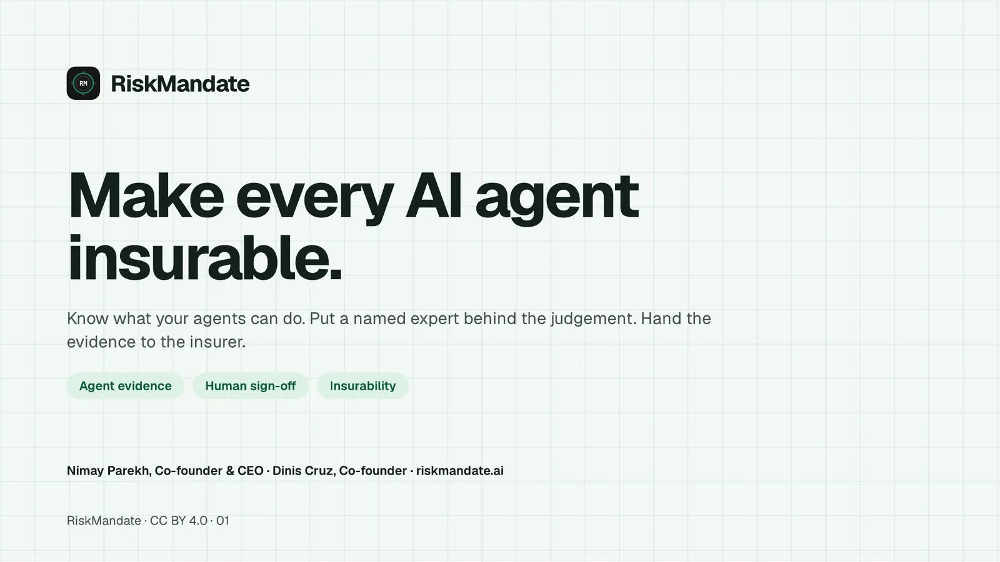
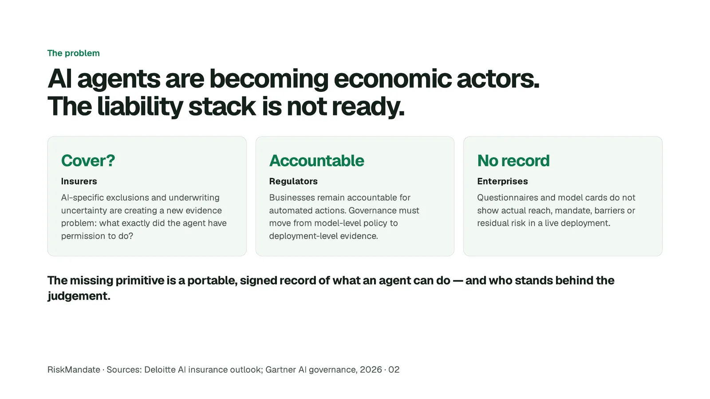
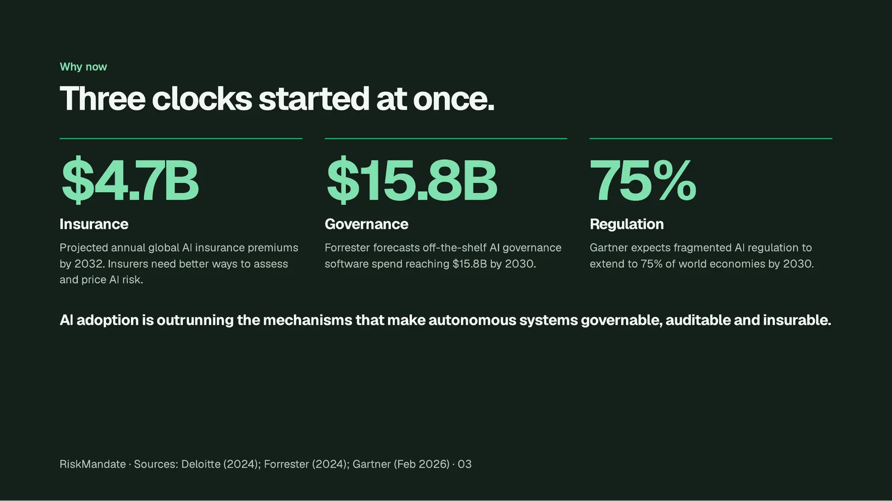
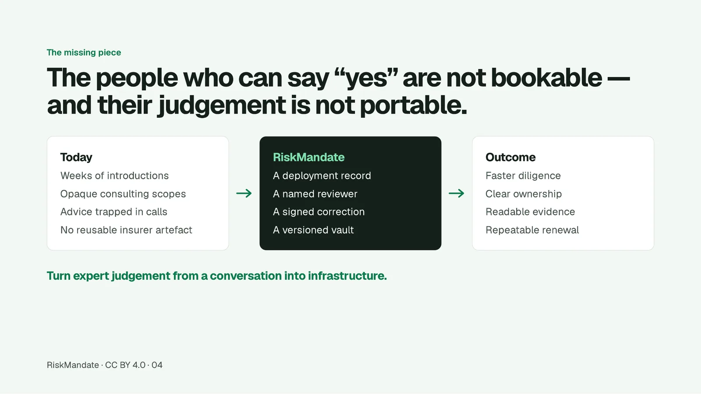
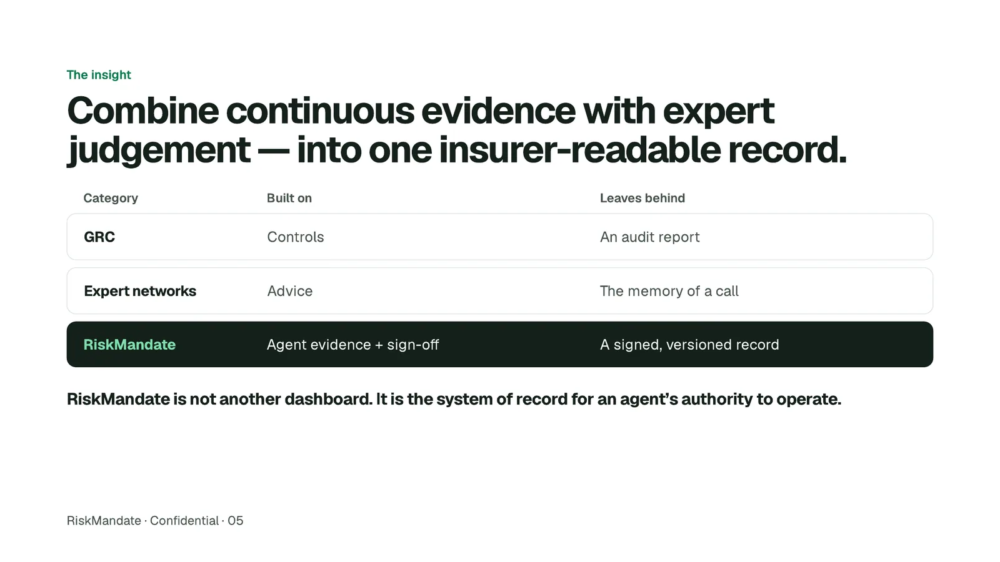
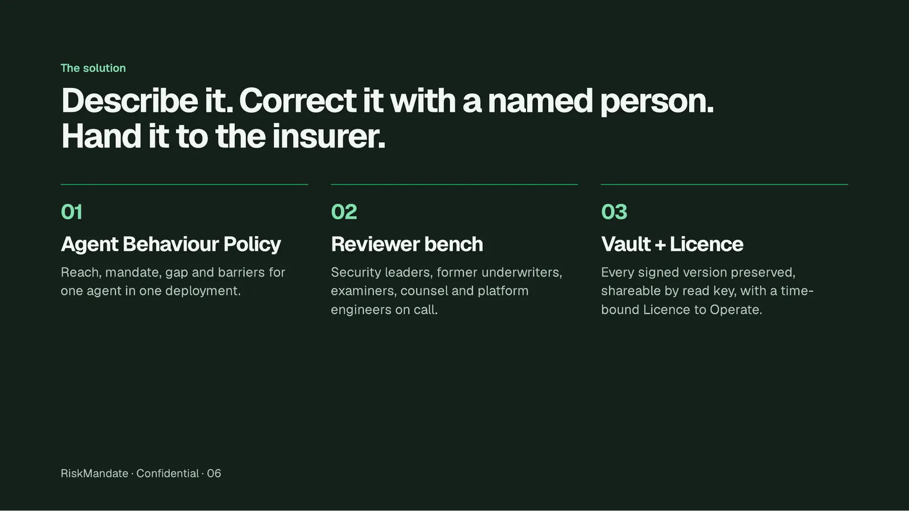
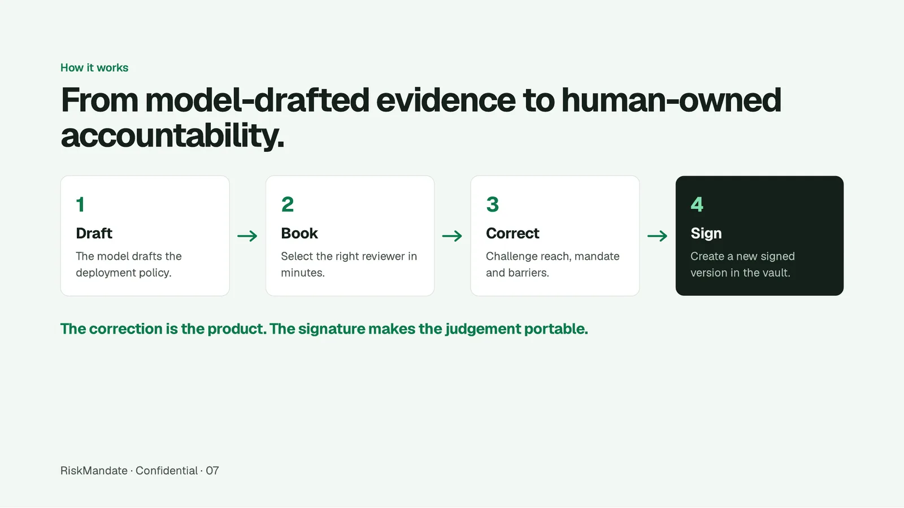
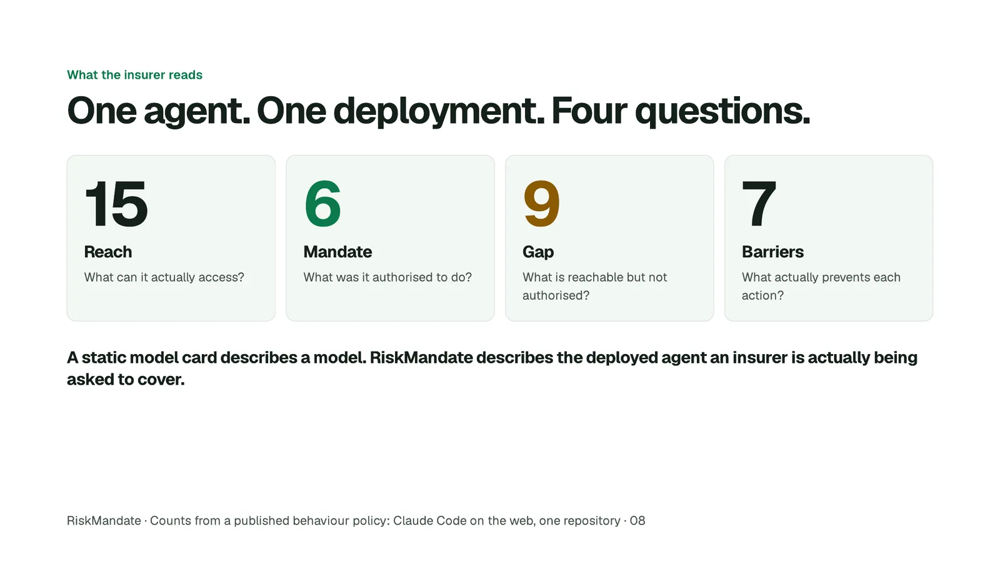
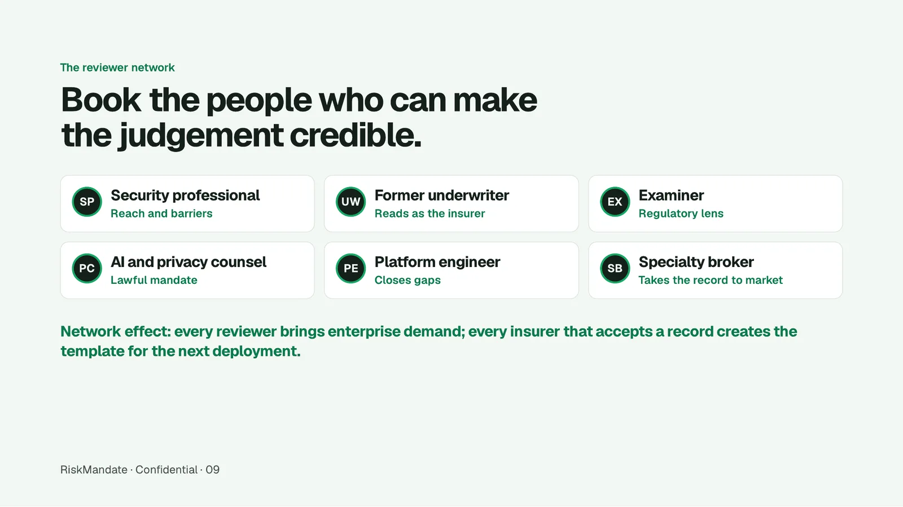
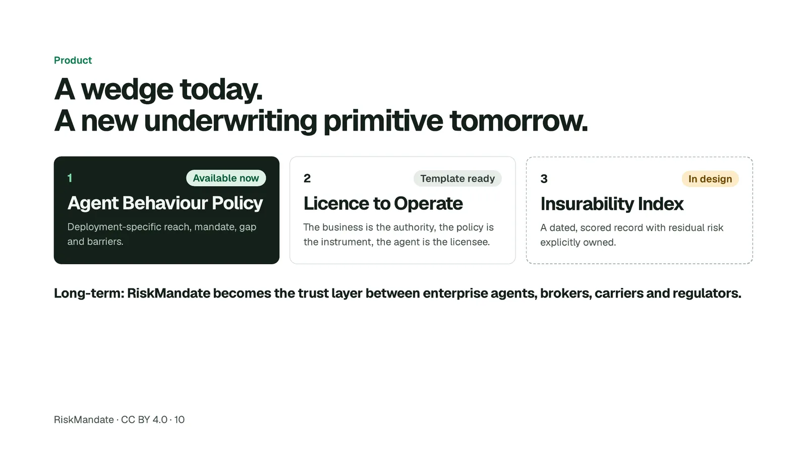
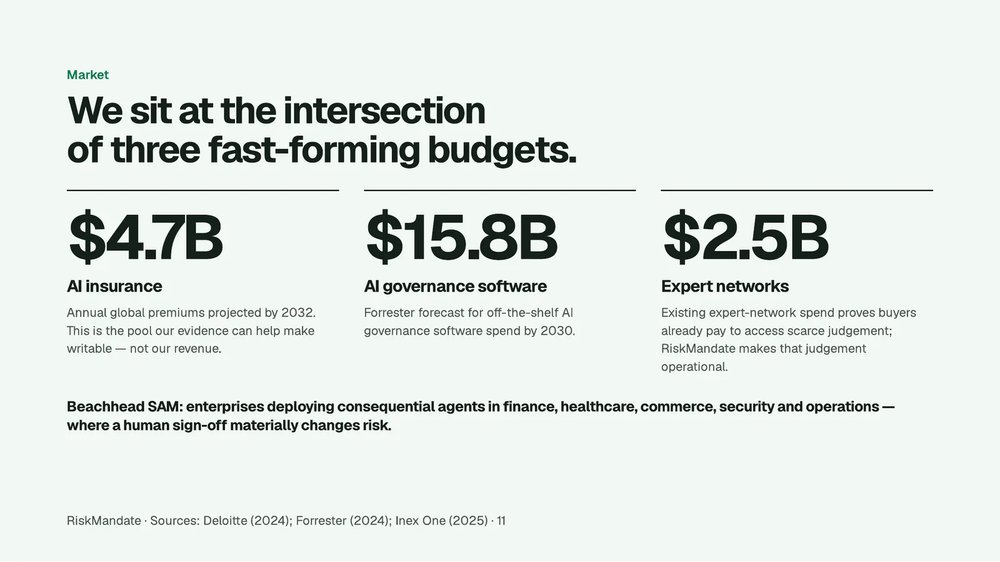
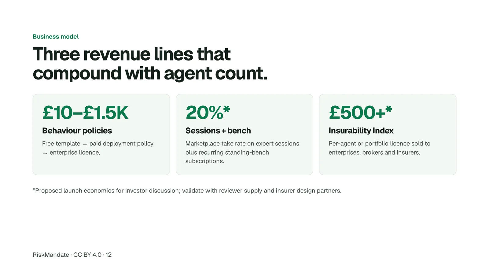
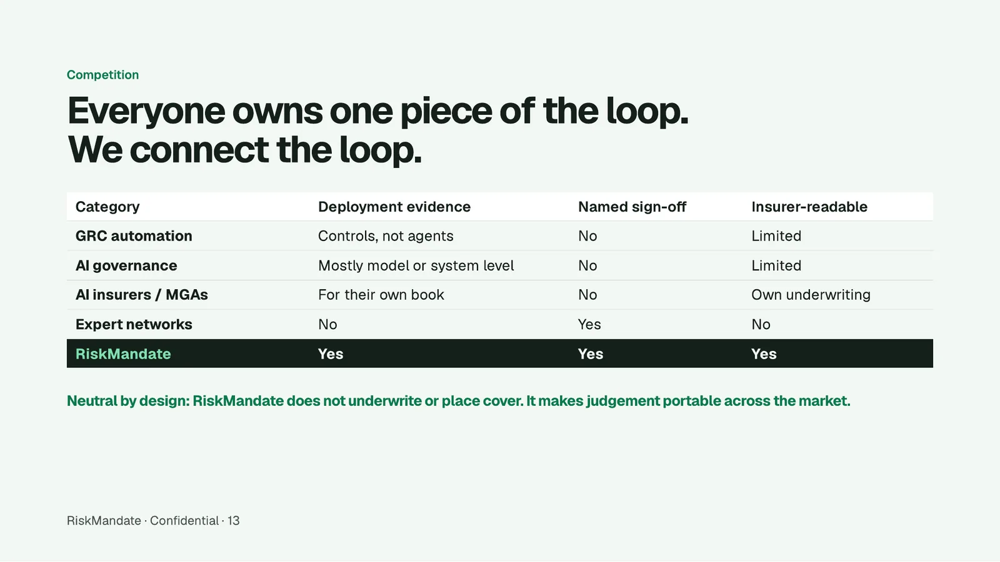
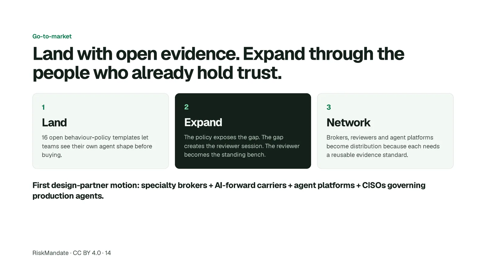
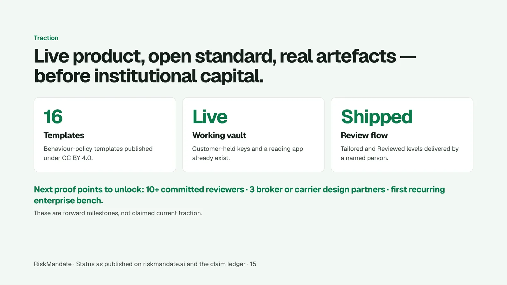
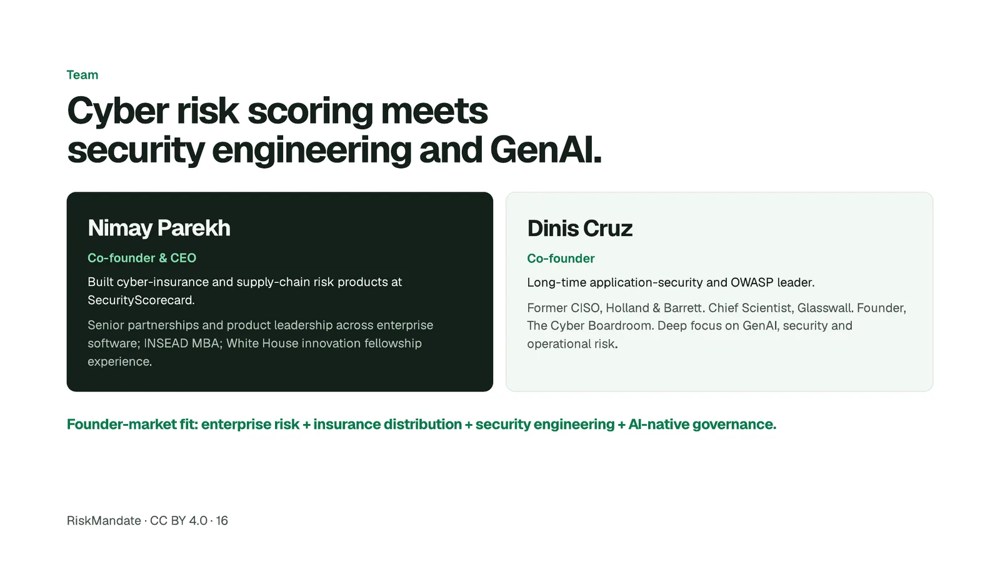
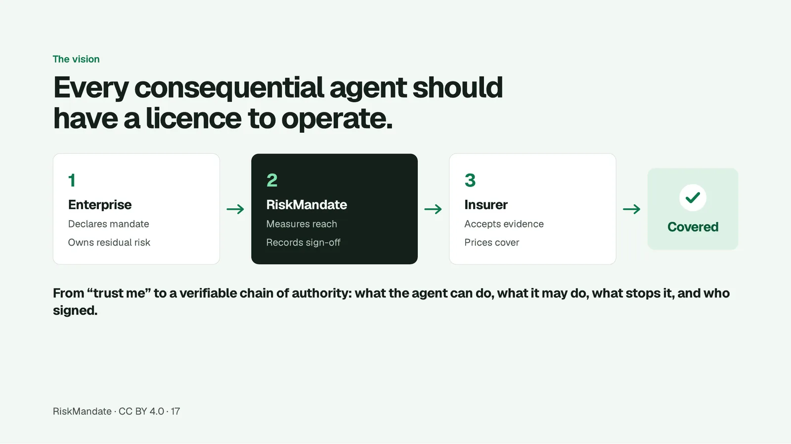
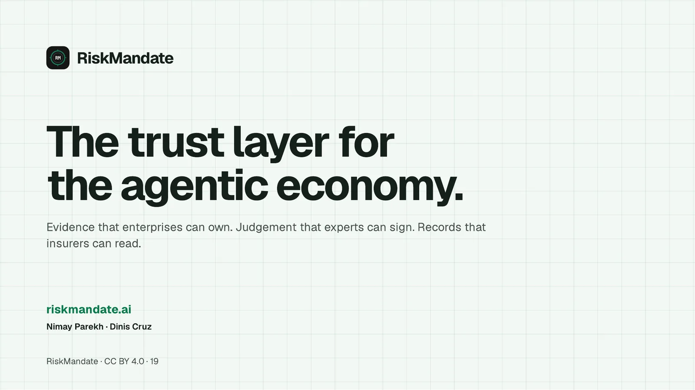
The contact page reaches both founders. Say which slide you want to argue with.
ReviewersThe reviewed level is somebody’s time. One name today, and the list is built for more.
Early adoptersFor the early users of The Cyber Boardroom and the early adopters of RiskMandate: a behaviour policy corrected with you.
The teamThe agents that make this site, each with an Agent Behaviour Policy in the same grammar as the catalogue.
What this page does not do: it does not list a company registration, an address or a cap table; it does not carry photographs; and it does not say what either founder’s agents can do, because a person is not profiled and an agent gets a behaviour policy instead.